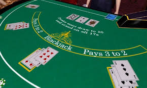
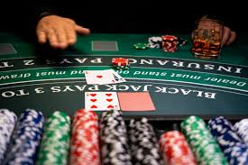
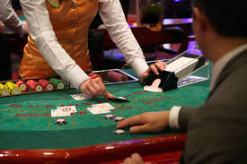

El Blackjack es un juego divertido y emocionante que puedes disfrutar tanto en casinos físicos como en plataformas en línea. Antes de comenzar, es importante familiarizarte con las reglas y estrategias básicas para aumentar tus posibilidades de ganar.
En la mayoría de los casinos en línea, puedes empezar con juegos gratuitos para practicar antes de apostar dinero real. Esto te permite mejorar tus habilidades sin riesgos y comprender mejor el funcionamiento del juego. Además, muchos casinos ofrecen bonos de bienvenida que te dan créditos adicionales para jugar más rondas sin necesidad de gastar tu propio dinero al principio.
Si juegas en un casino físico, la experiencia puede ser aún más inmersiva, con la interacción directa con el crupier y otros jugadores. Sin embargo, las estrategias y reglas básicas siguen siendo las mismas. Es crucial gestionar bien tu presupuesto y no dejarte llevar por la emoción del momento, para disfrutar del juego de manera responsable.
Recuerda que el Blackjack es un juego de probabilidades, y aunque puedes mejorar tus probabilidades de éxito con las estrategias correctas, no hay garantía de ganar siempre. Jugar por diversión y con responsabilidad es la mejor manera de disfrutar de este clásico juego de casino.
